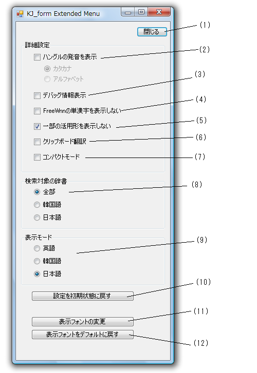

|
 |
(1)ダイアログを閉じる
(閉じなくても設定は反映されます) (2)ハングルの発音を表示するモード。 (3)デバッグモード （costとsrcタグの内容を表示するだけですが...) (4)FreeWnnの単漢字を表示しない。 １文字の漢字説明（【 単漢字 】）を出したくない場合は チェックしてください。 （デフォルトは表示する） (5)自動生成した動詞・形容詞の活用形など一部の活用形を表示しない。 (デフォルトは表示しない) (6)クリップボードに入った語を自動で翻訳する (7)表示をコンパクトにします。 画面が小さい場合などにお試しください。 (8)検索対象の辞書を絞ります (9)プログラムの表示言語を切り替えます。 (10)設定を初期状態に戻します。 (11)表示するフォントを選択できます。 (12)表示するフォントをデフォルトに戻します。 ※ハングルの発音表示(カタカナ)はプログラムが完全でないです。 （だから，ハングルのカタカナ化は信じないでください） ※(6)は最終的にはマウスドラッグかマウスオーバーに持っていきたいので暫定です。 |